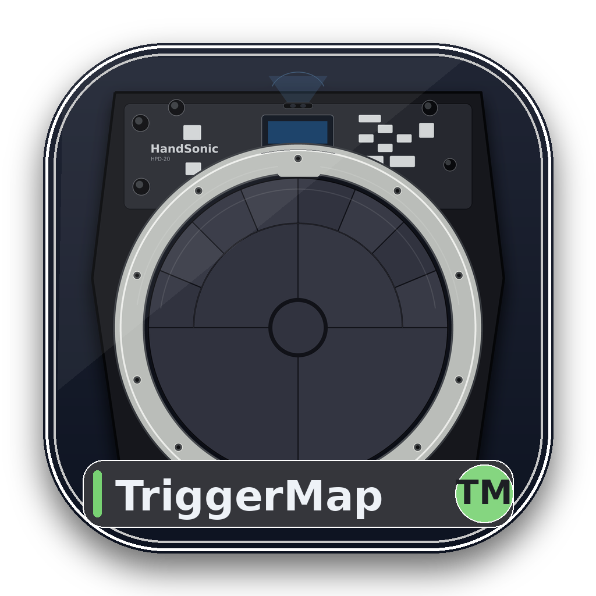
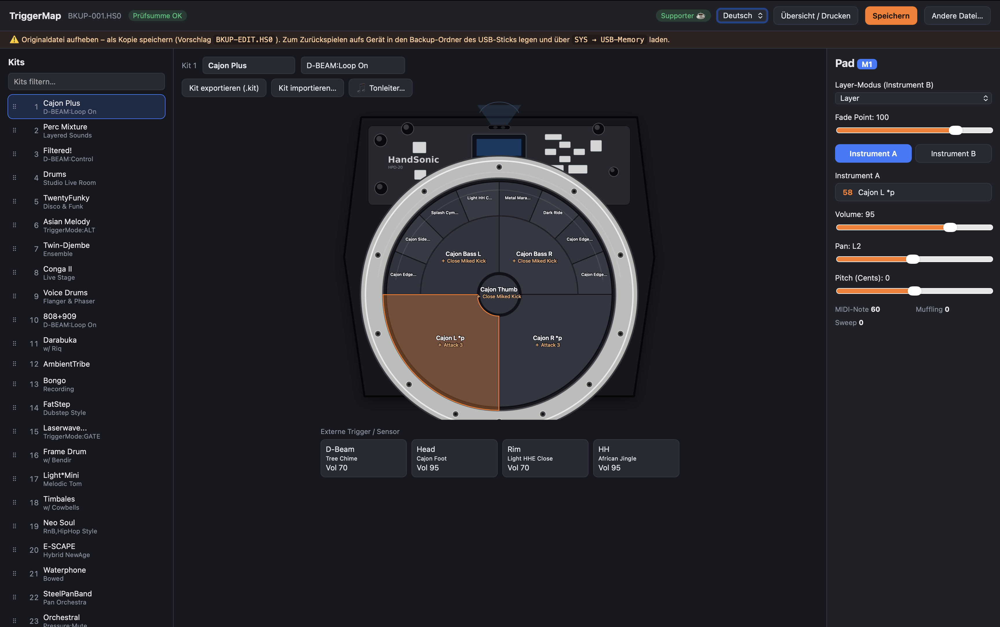
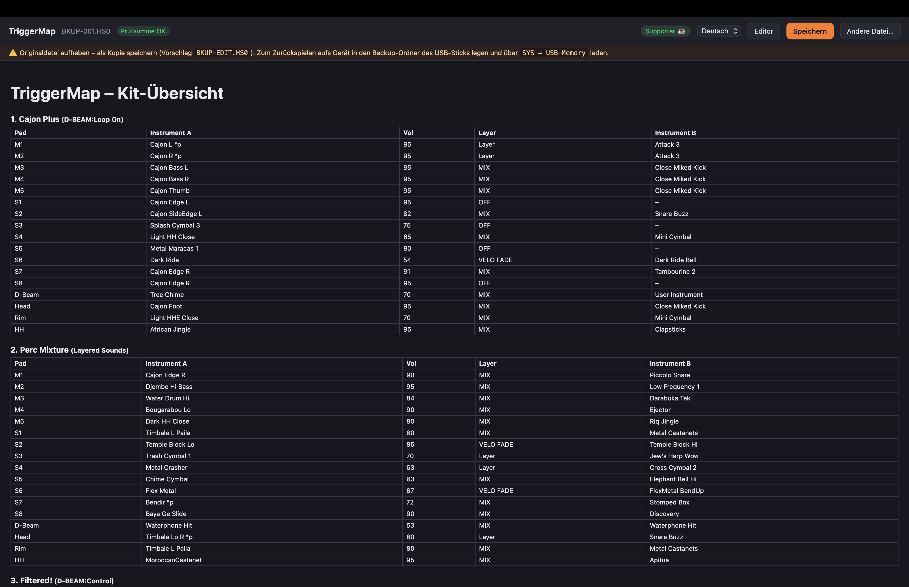

Editor for the Roland HPD-20 HandSonic
The HPD-20 can't be configured over MIDI and there's no current editor software. TriggerMap edits the device's own backup file — reorder kits, change pads & instruments, lay musical scales on the melodic pads, export/import kits, print an overview. Everything runs locally; nothing is uploaded. Free & open source.

Latest release: v0.1.2. macOS builds are signed & notarized. The Windows installer is unsigned — on first run choose “More info → Run anyway”.
All downloads & release notes: GitHub Releases.

On the HPD-20, go to SYS → USB-Memory and save a backup to a
USB stick (Roland/HPD-20/Backup/BKUP-XXX.HS0). Open that file
in TriggerMap, make your changes, save, copy it back to the stick and load
it on the device. Always keep a copy of the original.
TriggerMap is free and open source. If it's useful to you, consider buying a coffee on Ko-fi — one-time, you choose the amount. Supporters get a code that hides the in-app reminder.